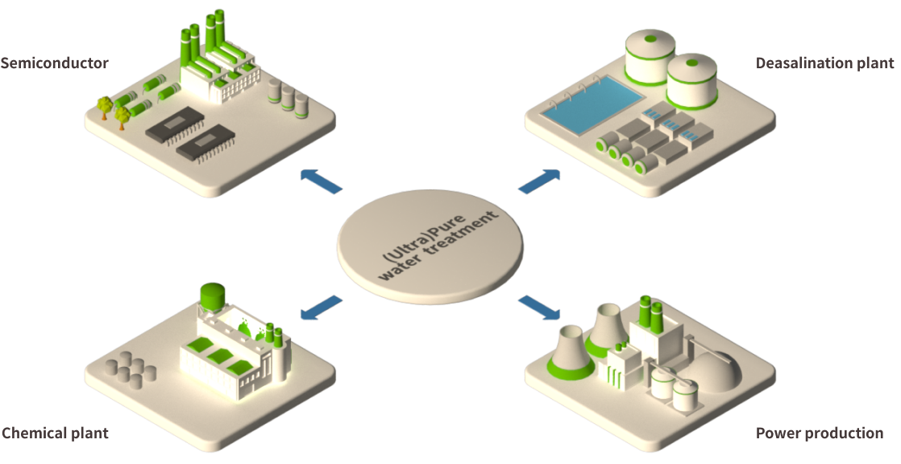
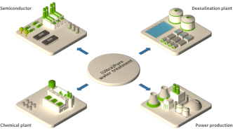

FUTURE
BUSINESS
ECORBIT provides a sustainable
environmental value with the resource
recirculation service
HOME
BUSINESS
FUTURE BUSINESS
SCROLL DOWN
Industrial Water Treatment System
ECORBIT is recognized as Korea's largest industrial water treatment company through
successful design, manufacture, installation, trial testing, performance testing,
and operation management of water treatment facilities in large-scale plants
for important national infrastructure such as nuclear and thermal power plants.

